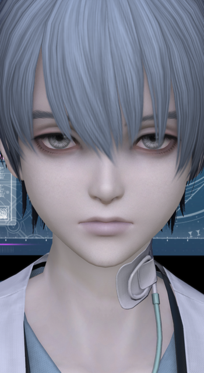
カリュクスCalyxImage source · © SQUARE ENIX

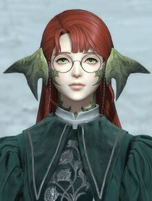
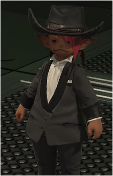
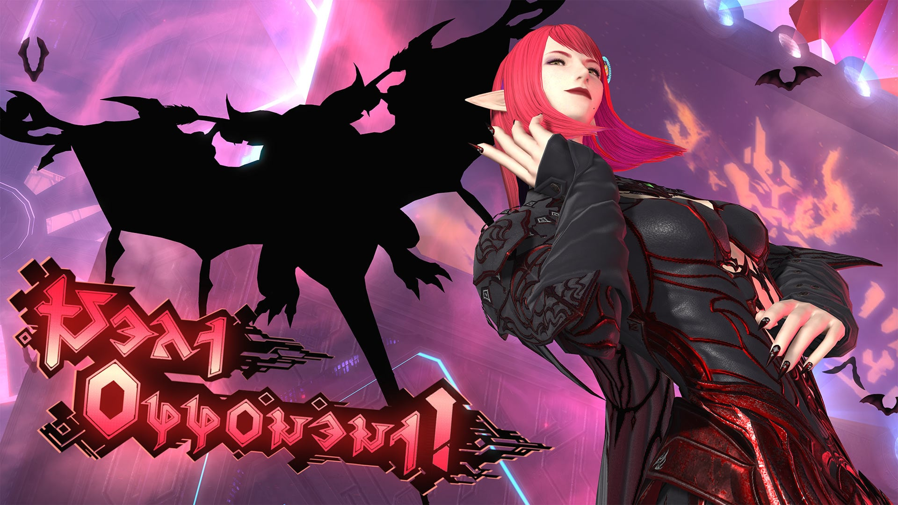
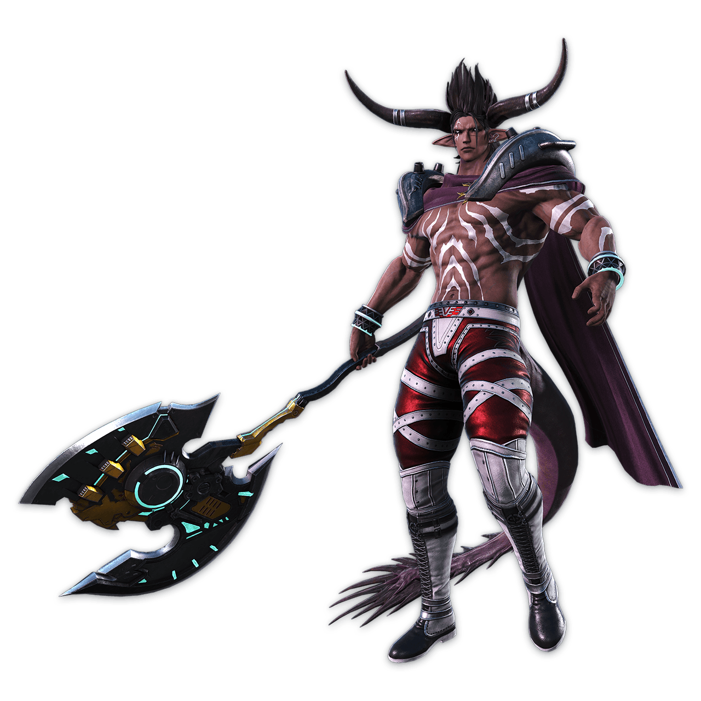
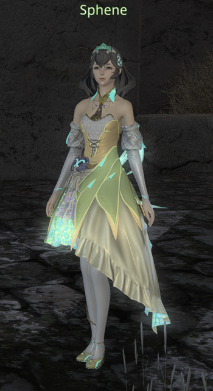
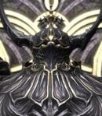
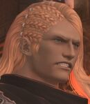
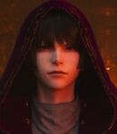
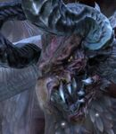
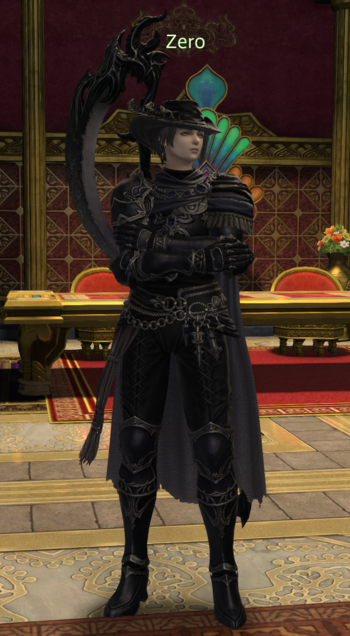
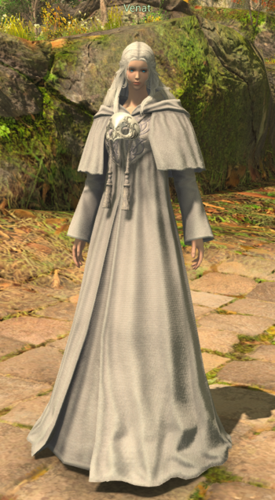
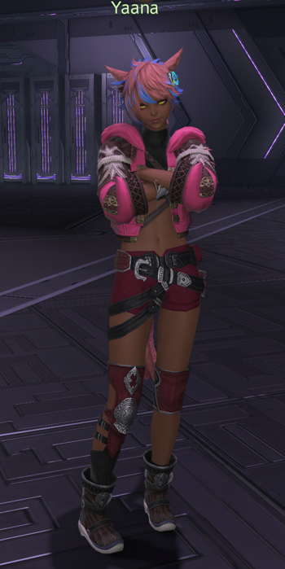
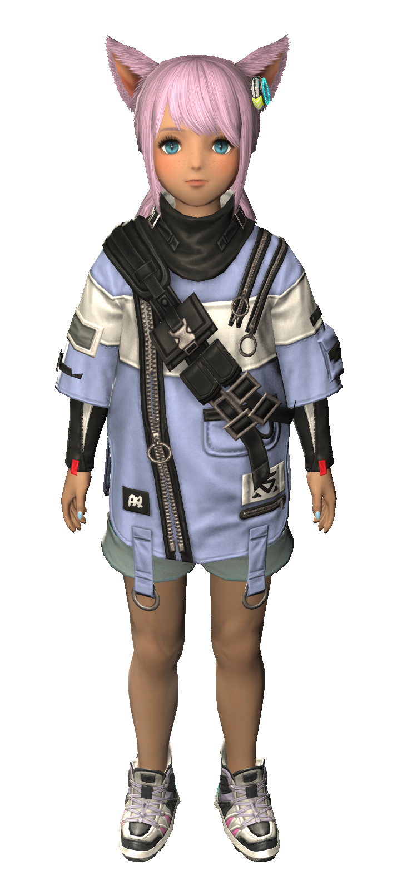
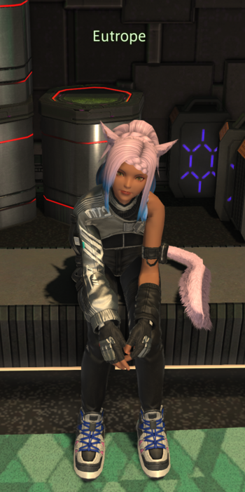
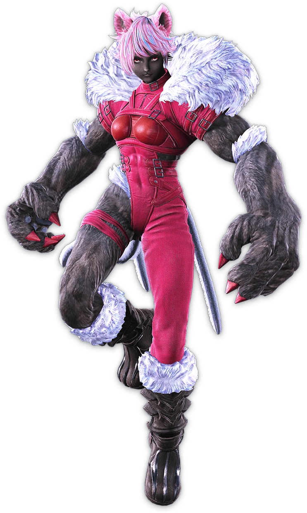
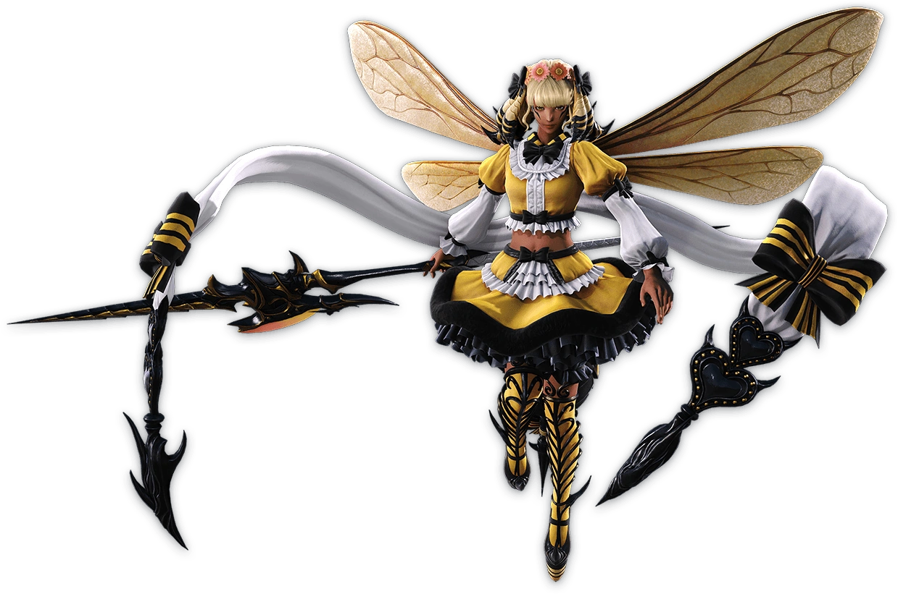
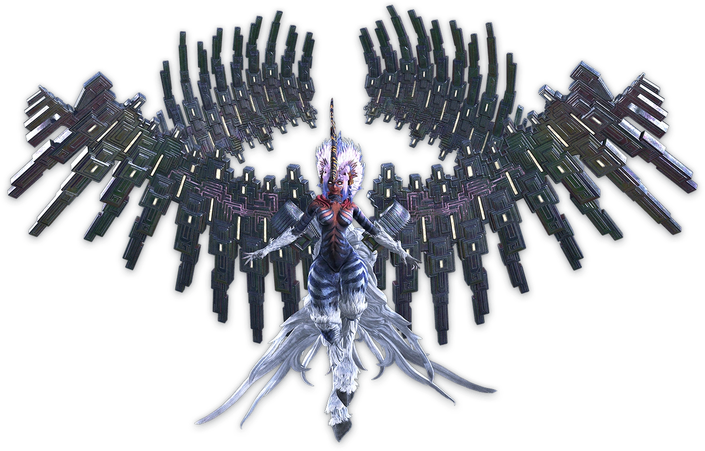
Calyx and Halmarut now have game portraits. Matching NPC/enemy names share one definition, including Alphinaud; distinct names and localized meanings remain separate. Images include game portraits from Behind The Voice Actors and Mudae. Contains expansion spoilers.